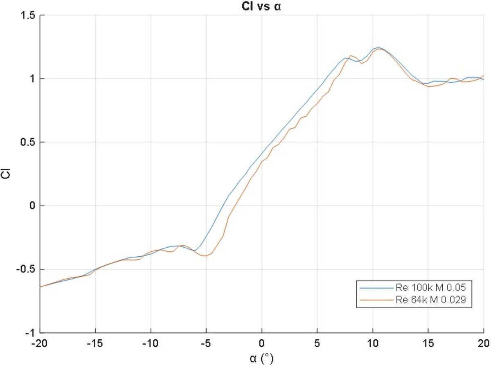
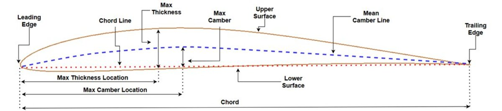
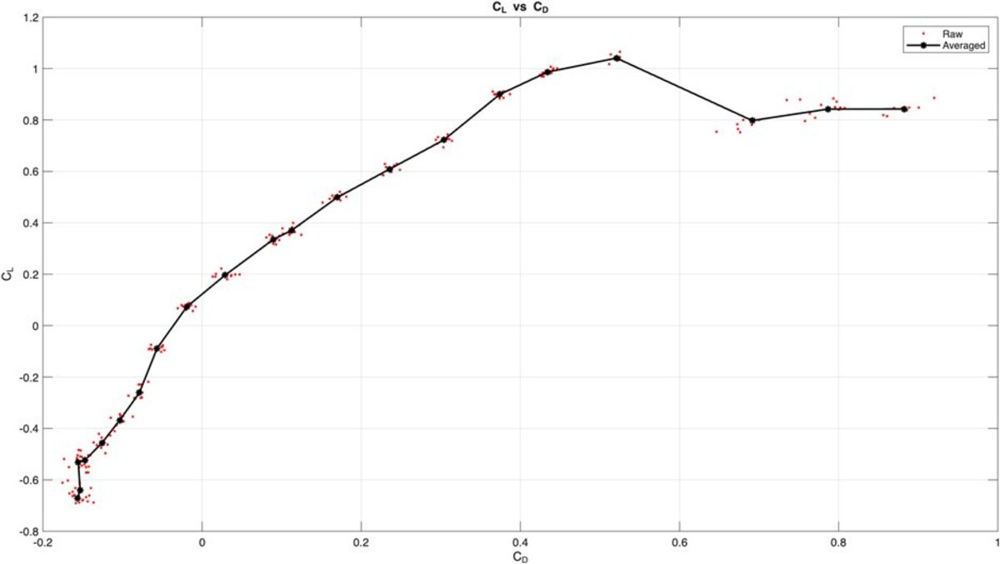

E387 Aerofoil Flow Control Analysis
Overview
A technical analysis of flow control methods for improving the aerodynamic performance of the Eppler 387 aerofoil at low Reynolds numbers. The E387 is widely used in UAV, sailplane, and small aircraft applications where Reynolds numbers typically fall between 60,000 and 500,000, a regime where laminar separation bubbles (LSBs) are the primary constraint on lift and drag performance.

Shape factor framework
The analysis is grounded in the boundary layer shape factor (H), defined as the ratio of displacement thickness to momentum thickness. Flow control works by reducing H from the laminar separation threshold of approximately 3.5 to the turbulent attached range of 1.3 to 1.5, well below the turbulent separation threshold of approximately 2.4. This framework provides a unified way to evaluate all flow control methods: they succeed to the extent that they manipulate H into the target range without excessive friction penalties.
Passive and active methods
Flow control was classified into passive methods (vortex generators, turbulator tape) and active methods (synthetic jets, dielectric barrier discharge plasma actuators). Passive methods are simpler and require no external energy input but offer no adaptability to changing flight conditions. Active methods, particularly synthetic jets, allow precise control of reattachment through Strouhal number optimisation in the St = 0.3 to 1.0 range.

The design paradox
The analysis concluded with a key insight: more aggressive flow control is not always better. The optimal approach for the E387 at low Reynolds numbers is precise manipulation of the laminar separation bubble position rather than complete elimination. Overly aggressive turbulence trips force premature transition across the entire chord, creating skin friction penalties that outweigh the pressure drag savings from eliminating the LSB. The engineering challenge is finding the control intensity that minimises total drag, not just pressure drag.
Method log
- Shape factor (H) framework for unified evaluation of flow control methods
- Classification of passive (VGs, turbulator tape) and active (synthetic jets, DBD plasma) approaches
- Strouhal number optimisation for synthetic jet reattachment forcing
- XFLR5 aerodynamic data analysis at Re 64k and 100k
- Design paradox: optimal LSB manipulation vs elimination trade-off